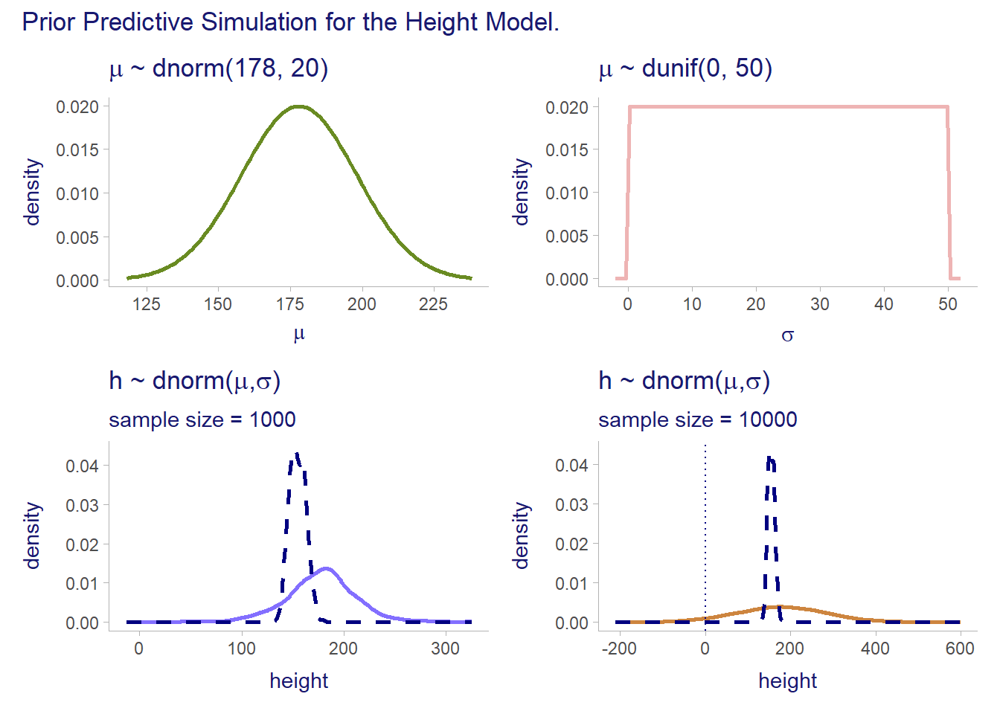
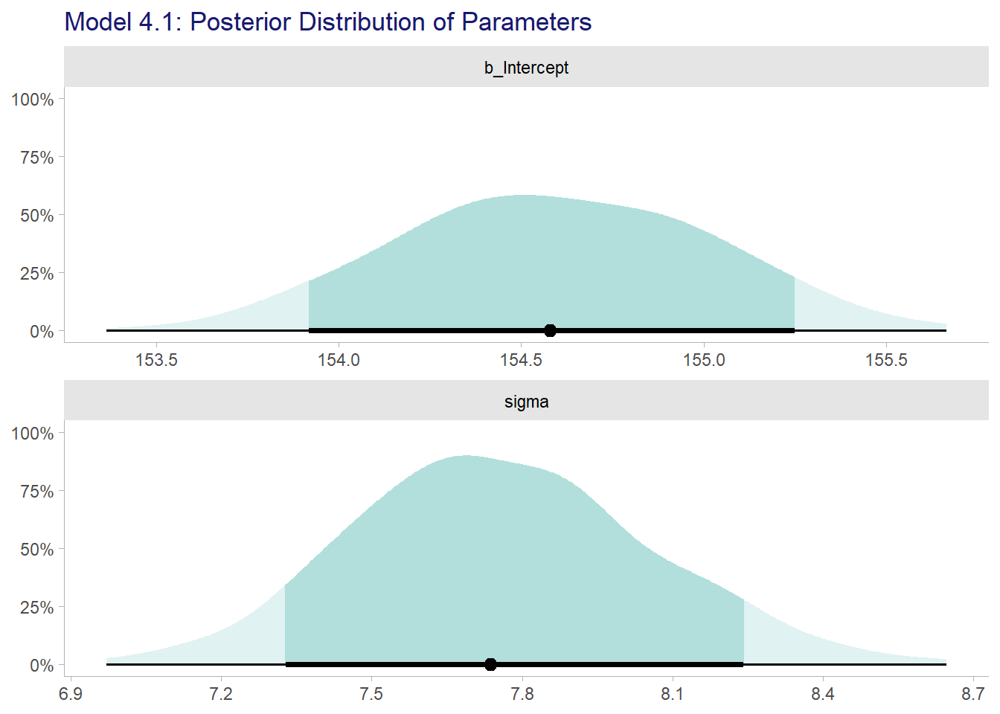
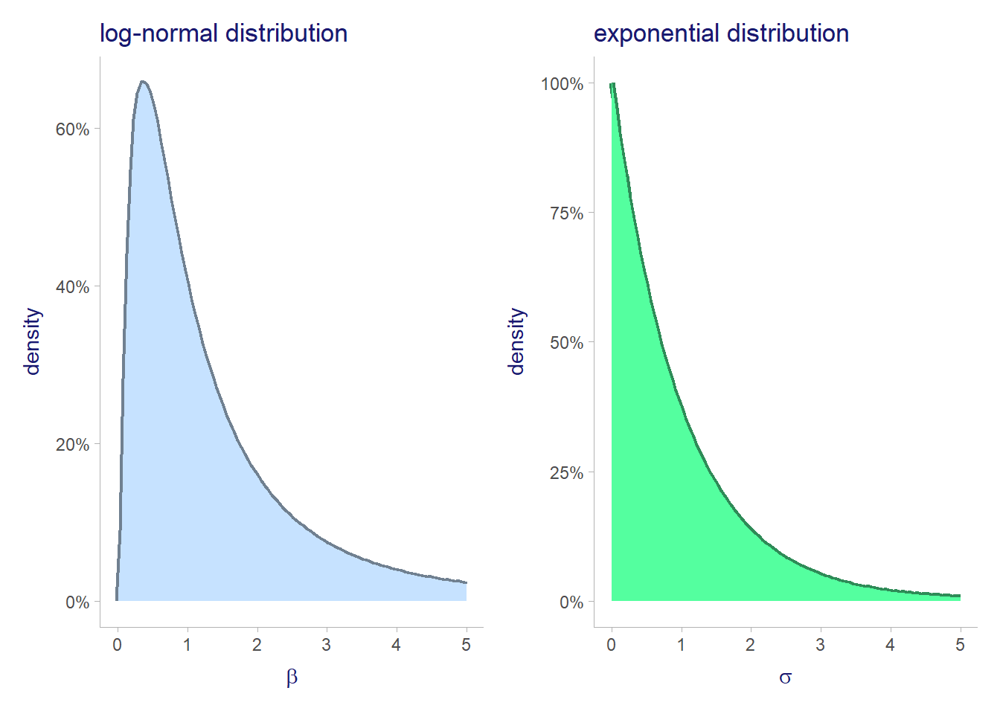
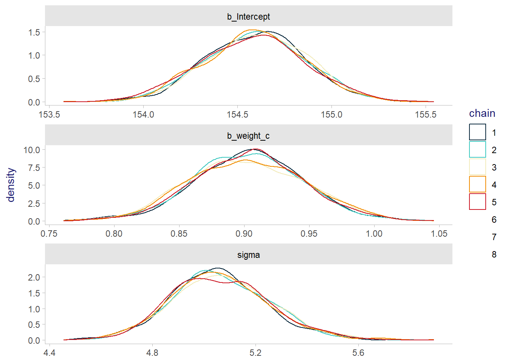
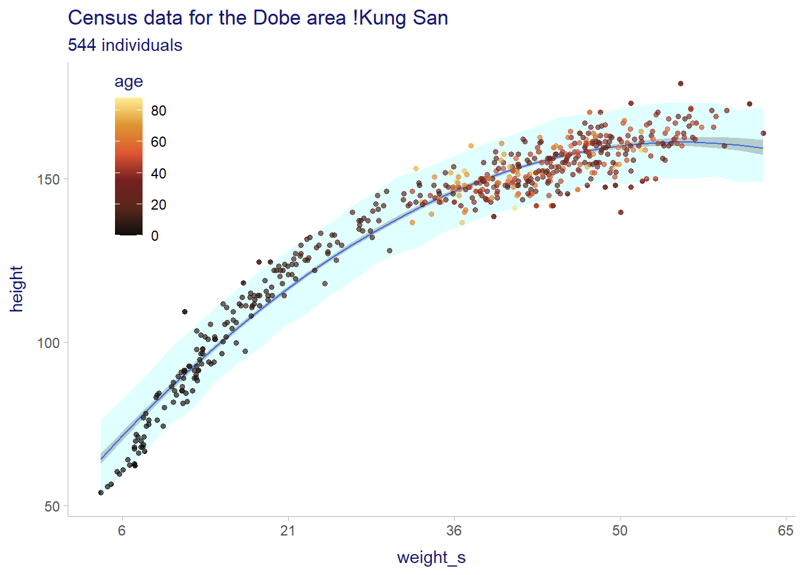

# For execution on a local, multicore CPU with excess RAM
options(mc.cores = parallel::detectCores())
# To avoid recompilation of unchanged Stan programs
rstan_options(auto_write = TRUE)4 Linear Models
Some options to facilitate the computations
The default theme used by ggplot2
# The default theme used by ggplot2
ggplot2::theme_set(ggdist::theme_ggdist())
ggplot2::theme_update(title = element_text(color = "midnightblue"))4.1 Why normal distributions are normal
Gaussian distribution
\[ \begin{equation} P \left(y \mid \mu, \sigma \right) = \frac{1}{\sqrt{2 \pi} \sigma} \exp{\left[-\frac{1}{2} \left(\frac{y-\mu}{\sigma} \right)^2 \right]} \end{equation} \]
gaussian distribution expressed with \(precision = \tau\) is \(\sigma = \frac{1}{\sqrt{\tau}}\)
\[ \begin{equation} P \left(y \mid \mu, \tau \right) = \frac{\tau}{\sqrt{2 \pi}} \exp{\left[-\frac{\tau}{2} \left(y-\mu \right)^2 \right]} \end{equation} \]
4.2 A language for describing model
\[ \begin{align*} outcome_i &\sim \mathcal{Normal}(\mu_i, \sigma) \\ \mu_i &= \beta \times predictor_i \\ \beta &\sim \mathcal{Normal}(0, 10) \\ \sigma &\sim \mathcal{HalfCauchy}(0, 1) \end{align*} \]
4.3 A Gaussian model of height
4.3.1 The data
data("Howell1")
dataHowel <- Howell1
rm(Howell1)which we can visualize using skimr
skimr::skim(dataHowel) |>
mutate(across(.cols = where(is.numeric), .fns = round, digits = 2))| Name | dataHowel |
| Number of rows | 544 |
| Number of columns | 4 |
| _______________________ | |
| Column type frequency: | |
| numeric | 4 |
| ________________________ | |
| Group variables | None |
Variable type: numeric
| skim_variable | n_missing | complete_rate | mean | sd | p0 | p25 | p50 | p75 | p100 | hist |
|---|---|---|---|---|---|---|---|---|---|---|
| height | 0 | 1 | 138.26 | 27.60 | 53.98 | 125.10 | 148.59 | 157.48 | 179.07 | ▁▂▂▇▇ |
| weight | 0 | 1 | 35.61 | 14.72 | 4.25 | 22.01 | 40.06 | 47.21 | 62.99 | ▃▂▃▇▂ |
| age | 0 | 1 | 29.34 | 20.75 | 0.00 | 12.00 | 27.00 | 43.00 | 88.00 | ▇▆▅▂▁ |
| male | 0 | 1 | 0.47 | 0.50 | 0.00 | 0.00 | 0.00 | 1.00 | 1.00 | ▇▁▁▁▇ |
select only the adults
dataHowel_gte18 <- dataHowel |>
filter(age >= 18)4.3.2 The model
\[ \begin{align*} h_i &\sim \mathcal{N}(\mu, \sigma)\\ \mu &\sim \mathcal{N}(178, 20) \\ \sigma &\sim \mathcal{Uniform}(0, 50) \end{align*} \]
We do the prior predictive simulation with the prior \(\mu \sim \mathcal{N}(178, 20)\)
priorHowel_gte18 <- list()
priorHowel_gte18 <- within(priorHowel_gte18, {
n <- 1e3
sim1 <- data.frame(id = seq_len(n)) |>
mutate(mu = rnorm(n = n(), mean = 178, sd = 20),
sigma = runif(n = n(), min = 0, max = 50),
height = rnorm(n = n(), mean = mu, sd = sigma))
})and we do the prior predictive simulation with the prior \(\mu \sim \mathcal{N}(178, 100)\)
priorHowel_gte18 <- within(priorHowel_gte18, {
n <- 1e4
sim2 <- data.frame(id=seq_len(1e4)) %>%
mutate(mu = rnorm(n = n(), mean = 178, sd = 100),
sigma = runif(n = n(), min = 0, max = 50),
height = rnorm(n = n(), mean = mu, sd = sigma))
})and we visualize using ggplot. We first create the 2 plots of analytical distribution plots
plotPrior <- list()
plotPrior$normal <- data.frame(mean = 178, sd = 20) |>
(\(.){
ggplot(data=.) +
geom_function(fun=dnorm, args=list(mean = .$mean, sd = .$sd),
color = "olivedrab4", size = 1) +
scale_x_continuous(limits = c(.$mean - 3 * .$sd, .$mean + 3 * .$sd),
breaks = scales::breaks_width(width = 25)) +
labs(title = bquote(mu ~ .(sprintf("~ dnorm(%.0f, %.0f)", .$mean, .$sd))),
x = expression(mu), y = "density")
})()Warning: Using `size` aesthetic for lines was deprecated in ggplot2 3.4.0.
ℹ Please use `linewidth` instead.# plotPrior$normal
plotPrior$uniform <- data.frame(min = 0, max = 50) |>
(\(.){
ggplot(data=.) +
geom_function(fun=dunif, args=list(min=.$min, max=.$max),
color="rosybrown2", size=1) +
scale_x_continuous(limits = c(.$min - 2, .$max + 2),
breaks = scales::breaks_width(width=10)) +
labs(title = bquote(mu ~ .(sprintf("~ dunif(%.0f, %.0f)", .$min, .$max))),
x = expression(sigma), y = "density")
})()
# plotPrior$uniformwe add the actual plot of height to the plots created by McElreath to facilitate the understanding of priors. McElreath suggests that priors should follows the scientific knowledge. See the interesting discussion at the end of section 4.3.2 on p. 84.
plotPrior <- within(plotPrior, {
# the density of actual data used for comparisons
actual <-
geom_density(data = dataHowel_gte18, aes(x = height),
color = "navy", linewidth = 1, linetype = "dashed")
})plotPrior <- within(plotPrior, {
# NOTE: we use (\(.){})() with |>
# https://towardsdatascience.com/understanding-the-native-r-pipe-98dea6d8b61b
sim1 <- priorHowel_gte18$sim1 |>
(\(.){
ggplot(data = ., aes(x = height)) +
geom_density(color = "slateblue1", linewidth = 1) +
theme(legend.position = c(0.1, 0.8)) +
labs(
title = expression(paste("h ~ dnorm(", mu, ",", sigma ,")")),
subtitle = sprintf("sample size = %d", nrow(.)),
fill = "quantile")})()
sim1 <- sim1 + actual # add the actual data (not in McElreath's curve)
})
# plotPrior$sim1plotPrior <- within(plotPrior, {
sim2 <- priorHowel_gte18$sim2 |>
(\(.){
ggplot(data = ., aes(x = height)) +
geom_density(color = "peru", linewidth = 1) +
geom_vline(xintercept = 0, linetype = "dotted", color = "navy") +
theme(legend.position = c(0.1, 0.8)) +
labs(
title = expression(paste("h ~ dnorm(", mu, ",", sigma ,")")),
subtitle = sprintf("sample size = %d", nrow(.)),
fill = "quantile")
})()
sim2 <- sim2 + actual # add the actual data (not in McElreath's curve)
})
# plotPrior$sim2and putting the plots together with patchwork we obtain
patchwork::wrap_plots(list(plotPrior$normal, plotPrior$uniform,
plotPrior$sim1, plotPrior$sim2)) +
plot_annotation(
title = "Prior Predictive Simulation for the Height Model."
)
4.3.3 Grid approximation of posterior distribution
First create the grid.
# create grid of mu and sigma
postHowel_gte18 <- list()
postHowel_gte18 <- within(postHowel_gte18, {
ngrid <- 200L
grid <- data.frame(
mu = seq(from = 140, to = 160, length.out = ngrid),
sigma = seq(from = 4, to = 9, length.out = ngrid)) |>
expand(mu, sigma)
})Then we calculate the likelihood. Since probabilities are percentage this causes a numerical issue as multiple multiplications of percentages will create very small numbers, so small in fact that they will be miscalculated.
To resolve this problem, we use logarithms.
That is the likelihood function from the model defined in 4.3.2
\[ P(\mu, \sigma \mid h) = \prod_{i=1}^n \mathcal{N}(y_i \mid \mu, \sigma) \cdot \mathcal{N}(\mu \mid mean = 0, sd = 10) \cdot \mathcal{U}(\sigma | min = 0, max = 10) \]
is transformed to log.
Important: Read the end note # 73 on page 449. All the explanations, including the usage of
max(post$prob)is explained.
\[ \log{P(\mu, \sigma \mid h)} = \sum_{i=1}^n \left[ \log{\mathcal{N}(y_i \mid \mu, \sigma)} + \log{\mathcal{N}(\mu \mid mean = 0, sd = 10)} + \log{\mathcal{U}(\sigma | min = 0, max = 10)} \right] \]
and to compute the posterior distribution we compute the likelihood which is the first element of the addition
\[ \sum_{i=1}^n \log{\mathcal{N}(y_i \mid \mu, \sigma)} \]
as follows
# The likelihood on the log scale
postHowel_gte18 <- within(postHowel_gte18, {
grid <- grid %>%
mutate(LL = sapply(
X = seq_len(nrow(.)),
FUN = function(i) {
sum(dnorm(x = dataHowel_gte18$height,
mean = grid$mu[i],
sd = grid$sigma[i],
log = TRUE))
})
)
})
glimpse(postHowel_gte18$grid)Rows: 40,000
Columns: 3
$ mu <dbl> 140, 140, 140, 140, 140, 140, 140, 140, 140, 140, 140, 140, 140,…
$ sigma <dbl> 4.000000, 4.025126, 4.050251, 4.075377, 4.100503, 4.125628, 4.15…
$ LL <dbl> -3812.776, -3777.627, -3743.158, -3709.350, -3676.189, -3643.659…then the remaining 2 elements of the summation are the priors
\[ \sum_{i=1}^n \left[ \log{\mathcal{N}(\mu \mid mean = 0, sd = 10)} + \log{\mathcal{U}(\sigma | min = 0, max = 10)} \right] \]
which we add to the likelihood to obtain the posterior distribution on the log scale
# add the priors to the likelihood on the log scales to obtain the
# log of the posterior
postHowel_gte18$grid <- postHowel_gte18$grid |>
mutate(prob =
LL +
dnorm(x = mu, mean = 178, sd = 20, log = TRUE) +
dunif(x = sigma, min = 0, max = 50, log = TRUE))and to convert the posterior back to the natural scale we exponentiate. The usage of max(the_grid$post) is explained in endnote 73. It is basically used as an approximation to what would be the denominator of the likelihood.
\[ \sum_{i=1}^n \left[ \log{\mathcal{N}(\mu \mid mean = 0, sd = 10)} + \log{\mathcal{U}(\sigma | min = 0, max = 10)} \right] \]
\[ \exp{\left[\log{P(\mu, \sigma \mid h)}\right]} = P(\mu, \sigma \mid h) \]
# convert back to real scale
# attention: see endnote 73 on using max(prob)
postHowel_gte18 <- within(postHowel_gte18, {
grid$prob <- with(grid, {exp(prob - max(prob))})
})plot the results on a heatmap
plotPost <- list()
plotPost$heat <- ggplot(data = postHowel_gte18$grid, aes(x = mu, y = sigma, fill = prob)) +
geom_raster() +
scale_x_continuous(limits = c(153, 156)) +
scale_y_continuous(limits = c(6.5, 9)) +
scale_fill_paletteer_c("grDevices::Viridis") +
coord_fixed() +
labs(title = "The grid's posterior prob.",
x = expression(mu), y = expression(sigma))
plotPost$heatWarning: Removed 37129 rows containing missing values (`geom_raster()`).4.3.4 Sampling from the grid’s posterior
postHowel_gte18$draws <- postHowel_gte18$grid |>
slice_sample(n = 1e4, weight_by = prob, replace = TRUE)and visualizing the density of \(\mu\) and \(\sigma\) together using ggExtra
plotPost$marg <- ggplot(data = postHowel_gte18$draws,
mapping = aes(x = mu, y = sigma)) +
geom_point(color = "mediumorchid", size = 0.8) +
geom_jitter(color = "mediumorchid", size = 0.8) +
labs(title = expression("Distribution of" ~ mu ~"and" ~ sigma ~ " using a grid."),
x = expression(mu), y = expression(sigma))
plotPost$marg <- ggExtra::ggMarginal(plotPost$marg,
xparams = list(colour = "blue", fill = "lightblue",
linewidth = 1),
yparams = list(colour="darkgreen", fill = "lightgreen",
linewidth = 1))
plotPost$marg
4.3.5 Finding the posterior distribution with quap and brm()
4.3.5.1 using rethinking::map
We now fit the model using rethinking::quap()
See the overthinking box about
list()vsalist()on p. 88 of chapter 4.
The model is
\[ \begin{align*} h_i &\sim \mathcal{N}(\mu, \sigma)\\ \mu &\sim \mathcal{N}(178, 20) \\ \sigma &\sim \mathcal{Uniform}(0, 50) \end{align*} \]
and the fit is
fit04_01quap <- xfun::cache_rds(
{rethinking::quap(
data = dataHowel_gte18,
flist = alist(
height ~ dnorm(mu, sigma),
mu ~ dnorm(178, 28),
sigma ~ dunif(0, 50)),
start = list(
mu = mean(dataHowel_gte18$height),
sigma = sd(dataHowel_gte18$height))
)},
file = "ch04_fit04_01quap")which gives us the summary
precis(fit04_01quap) mean sd 5.5% 94.5%
mu 154.602156 0.4120367 153.943642 155.260671
sigma 7.731328 0.2913854 7.265637 8.197018and the variance covariance matrix is
vcov(fit04_01quap) |>
round(digits = 3) mu sigma
mu 0.17 0.000
sigma 0.00 0.085and the correlation matrix
cov2cor(vcov(fit04_01quap)) mu sigma
mu 1.00000000 0.00092618
sigma 0.00092618 1.000000004.3.5.2 Using brms::brm
This borrows heavily from Kurz (2020)
As mentioned in chapter 8, it is best to use Half-Cauchy distribution for sigma as the tends to work better when using Half Cauchy for sigma when doing a Hamiltonian MCMC with brm().
Therefore the model is
\[ \begin{align*} h_i &\sim \mathcal{N}(\mu, \sigma)\\ \mu &\sim \mathcal{N}(178, 20) \\ \sigma &\sim \mathcal{HalfCauchy}(0, 1) \end{align*} \]
See the overthinking box about half Cauchy distribution in chapter 8 on p. 260.
This process takes less than a second. It has been save to the rsd file b04_01.rds
tictoc::tic(msg = sprintf("run time of %s, use the cache.", "60 secs."))
fit04_01brm <- xfun::cache_rds({
brms::brm(data = dataHowel_gte18,
formula = height ~ 1,
family = gaussian,
prior = c(prior(normal(178, 20), class = Intercept),
prior(cauchy(0, 1), class = sigma)),
iter = 2000, warmup = 1000, chains = 4, cores = detectCores(),
seed = 4)},
file = "ch04_fit04_01brm")
tictoc::toc()run time of 60 secs., use the cache.: 0.14 sec elapsedplot(fit04_01brm)with the summary
summary(fit04_01brm) Family: gaussian
Links: mu = identity; sigma = identity
Formula: height ~ 1
Data: dataHowel_gte18 (Number of observations: 352)
Draws: 4 chains, each with iter = 2000; warmup = 1000; thin = 1;
total post-warmup draws = 4000
Population-Level Effects:
Estimate Est.Error l-95% CI u-95% CI Rhat Bulk_ESS Tail_ESS
Intercept 154.60 0.42 153.76 155.41 1.00 3454 2464
Family Specific Parameters:
Estimate Est.Error l-95% CI u-95% CI Rhat Bulk_ESS Tail_ESS
sigma 7.74 0.28 7.19 8.32 1.00 3956 2623
Draws were sampled using sampling(NUTS). For each parameter, Bulk_ESS
and Tail_ESS are effective sample size measures, and Rhat is the potential
scale reduction factor on split chains (at convergence, Rhat = 1).which can also be done with tidybayes::summarize_draws which comes from the posterior package.
# normally we only use summarise_draws() but here we change it to match
# the width of 0.89
tidybayes::summarise_draws(fit04_01brm, mean, median, sd, mad,
~quantile2(.x, probs = c(0.055, 0.945))) |>
mutate(across(.cols = where(is.numeric), .fns = round, digits = 2))# A tibble: 4 × 7
variable mean median sd mad q5.5 q94.5
<chr> <dbl> <dbl> <dbl> <dbl> <dbl> <dbl>
1 b_Intercept 155. 155. 0.42 0.42 154. 155.
2 sigma 7.74 7.73 0.28 0.28 7.31 8.22
3 lprior -9.16 -9.16 0.08 0.08 -9.29 -9.04
4 lp__ -1228. -1227. 1 0.72 -1229. -1227. and to plot the posteriors we need to know the names of the variables
tidybayes::get_variables(fit04_01brm) [1] "b_Intercept" "sigma" "lprior" "lp__"
[5] "accept_stat__" "stepsize__" "treedepth__" "n_leapfrog__"
[9] "divergent__" "energy__" and we spread the data with one column per variable to be able to plot it. The tidybayes package is particularly useful for this. We will use it extensively from now on.
In particular, we can use tidybayes::spread_draws() to put variables in separate columns or tidybayes::gather_draws() to have them in long format.
We can visualize with ggdist. it could be done with tidybayes but since tidybayes reexport ggdist we use it directly.
post04_01brm <- fit04_01brm |>
gather_draws(b_Intercept, sigma, ndraws = 500)# source: https://cran.r-project.org/web/packages/ggdist/vignettes/slabinterval.html
plot04_01 <- post04_01brm |>
ggplot(aes(x = .value)) +
stat_halfeye(aes(fill = stat(level)), .width = c(0.89, 1)) +
scale_x_continuous(breaks = scales::breaks_extended(n = 7),
labels = scales::label_number(accuracy = 0.1)) +
scale_y_continuous(labels = scales::label_percent()) +
scale_fill_paletteer_d(palette = "ggsci::teal_material",
na.translate = FALSE) +
theme(legend.position = "none") +
labs(title = "Model 4.1: Posterior Distribution of Parameters", x = NULL, y = NULL) +
facet_wrap(. ~ .variable, ncol = 1, scales = "free")
plot04_01Warning: `stat(level)` was deprecated in ggplot2 3.4.0.
ℹ Please use `after_stat(level)` instead.Warning: Using the `size` aesthietic with geom_segment was deprecated in ggplot2 3.4.0.
ℹ Please use the `linewidth` aesthetic instead.
4.3.6 Sampling from a fit
4.3.6.1 Using quap
Since quap is a quadratic approximation, how do we simulate 2 variables, \(\mu\) and \(\sigma\)?
Simply quap gives us the variance covariance. Therefore quap can be used to simulation the bivariate normal distribution of \(\mu\) and \(\sigma\)
vcov(fit04_01quap) mu sigma
mu 0.1697742465 0.0001111986
sigma 0.0001111986 0.0849054742from which we can obtain the correlation matrix
cov2cor(vcov(fit04_01quap)) |>
round(digits = 3) mu sigma
mu 1.000 0.001
sigma 0.001 1.000so to simulate using rethinking we simply use
post04_01m <- extract.samples(fit04_01quap, n = 1e4)which gives us a sample of size 10000 of the posterior distribution which can be summarized with the usual precis()
precis(post04_01m) mean sd 5.5% 94.5% histogram
mu 154.600903 0.4079632 153.955630 155.259508 ▁▁▁▅▇▂▁▁
sigma 7.733249 0.2919094 7.270191 8.202592 ▁▁▁▂▅▇▇▃▁▁▁▁4.3.6.2 Using brm
Using brm however we are not given the variance covariance, it is only available for the intercept (first-level parameter)
vcov(fit04_01brm) Intercept
Intercept 0.1750386So you have to calculate the var-cov matrix by using a sample from the posterior distribution
post04_01b <- tidy_draws(fit04_01brm)
# compute the cov
cor(post04_01b[, c("b_Intercept", "sigma")]) |>
round(digits = 3) b_Intercept sigma
b_Intercept 1.000 0.001
sigma 0.001 1.000See comment from Kurz (2020) at end of section 4.3.6 to explain that McElreath uses
mvnorm()fromMASSto simulate using the varcov whereas withbrms::tidy_draws()we do it directly.
Also Kurz (2020) has a nice discussion on how to create summary with histogram.
4.4 Linear predictions
4.4.1 The linear model strategy
\[ \begin{align*} h_i &\sim \mathcal{N}(\mu_i, \sigma)\\ \mu_i &= \alpha + \beta (x_i - \bar{x}) \\ \alpha &\sim \mathcal{N}(178, 20) \\ \beta &\sim \mathcal{N}(0,10) \\ \sigma &\sim \mathcal{Uniform}(0, 50) \end{align*} \]
4.4.1.1 Probability of the data
\[ h_i \sim \mathcal{N}(\mu_i, \sigma) \]
4.4.1.2 Linear model
\[ \mu_i = \alpha + \beta (x_i - \bar{x}) \]
4.4.1.3 Priors
\[ \begin{align*} \alpha &\sim \mathcal{N}(178, 20) \\ \beta &\sim \mathcal{N}(0,10) \\ \sigma &\sim \mathcal{Uniform}(0, 50) \end{align*} \]
The goal is to simulate the heights from the model, using only the prior.
priorHeights <- list()
priorHeights <- within(priorHeights, {
n <- 100L
set.seed(4)
sim <- data.frame(
id = seq_len(n),
a = rnorm(n = n, mean = 178, sd = 20),
b = rnorm(n = n, mean = 0, sd = 10)) |>
expand(nesting(id, a, b), weight = range(dataHowel_gte18$weight)) |>
mutate(height = a + b * (weight - mean(dataHowel_gte18$weight)))
})
# glimpse(priorHeights$sim)and we plot if
ggplot(priorHeights$sim, aes(x = weight, y = height, group = id)) +
geom_line(alpha = 1/10) +
geom_hline(yintercept = c(0, 272), linetype = c(2, 1), size = 1/3) +
coord_cartesian(ylim = c(-100, 400)) +
labs(title = "b ~ dnorm(0, 10)")4.4.1.3.1 Adjusting the priors
Since we know that the effect (\(\beta\)) of the weight on height, i.e. the relation between the 2 should be positive and very large value unlikely we can use the log-normal as a prior on \(beta\).
In addition, sigma can also very often be better modeled with the exponential or HalfCauchy distribution. See section 9.5.3 in the text. We will use the exponential distribution for \(\sigma\) in this work.
priorHeights <- within(priorHeights, {
lnorm <- ggplot(data.frame(x = c(0, 5)), aes(x)) +
stat_function(geom = "line", fun = dlnorm, args = list(meanlog = 0, sdlog = 1),
color = "slategray", linewidth = 1.5) +
stat_function(geom = "area", fun = dlnorm, args = list(meanlog = 0, sdlog = 1),
fill = "slategray1") +
scale_y_continuous(labels = scales::label_percent()) +
labs(title = "log-normal distribution", x = expression(beta), y = "density")
exp <- ggplot(data.frame(x = c(0, 5)), aes(x)) +
stat_function(geom = "line", fun = dexp, args = list(rate = 1),
color = "seagreen", linewidth = 1.5) +
stat_function(geom = "area", fun = dexp, args = list(rate = 1),
fill = "seagreen1") +
scale_y_continuous(labels = scales::label_percent()) +
labs(title = "exponential distribution", x = expression(sigma), y = "density")
})
priorHeights$lnorm + priorHeights$exp
\[ \begin{align*} h_i &\sim \mathcal{N}(\mu_i, \sigma)\\ \mu_i &= \alpha + \beta (x_i - \bar{x}) \\ \alpha &\sim \mathcal{N}(178, 20) \\ \beta &\sim \mathcal{LogNormal}(0,1) \\ \sigma &\sim \mathcal{Exponential}(1) \end{align*} \]
4.4.2 Fitting the posterior distribution
As suggested by the discussion of prior just above, we use a log-normal prior for \(\beta\)
\[ \begin{align*} h_i &\sim \mathcal{N}(\mu_i, \sigma)\\ \mu_i &= \alpha + \beta (x_i - \bar{x}) \\ \alpha &\sim \mathcal{N}(178, 20) \\ \beta &\sim \mathcal{LogNormal}(0,1) \\ \sigma &\sim \mathcal{Exponential}(1) \end{align*} \]
4.4.2.1 Using quap
We add the centralized weight to the data
dataHowel_gte18 <- dataHowel_gte18 |>
mutate(weight_c = as.numeric(scale(weight, center = TRUE, scale = FALSE)))then get the fit using rethinking::quap
Giving start values to
quapseem to help it significantly and avoiding error, at least when using b ~ dlnorm(0, 1).
tictoc::tic()
fit04_03quap <- xfun::cache_rds(
{rethinking::quap(
data = dataHowel_gte18,
flist = alist(
height ~ dnorm(mu, sigma),
mu <- a + b * weight_c,
a ~ dnorm(178, 20),
b ~ dlnorm(0, 1),
sigma ~ dunif(0, 50)),
start = list(
a = mean(dataHowel_gte18$height),
sigma = sd(dataHowel_gte18$height))
)},
file = "ch04_fit04_03quap")
tictoc::toc()0.02 sec elapsedprecis(fit04_03quap) mean sd 5.5% 94.5%
a 154.6013679 0.27030764 154.1693641 155.0333718
sigma 5.0718806 0.19115475 4.7663784 5.3773828
b 0.9032807 0.04192363 0.8362786 0.97028284.4.2.2 Using brm
Again, we use the exponential distribution as a prior of sigma to facilitate the iterations with brm. There are 2 equivalent ways to run this model. One uses the log-normal distribution of \(\beta\), the other one uses the log transform of \(\beta\) with the normal distribution. The two models are mathematically equivalent
4.4.2.3 Using lognormal distribution
\[ \begin{align*} h_i &\sim \mathcal{N}(\mu_i, \sigma)\\ \mu_i &= \alpha + \beta (x_i - \bar{x}) \\ \alpha &\sim \mathcal{N}(178, 20) \\ \beta &\sim \mathcal{LogNormal}(0,1) \\ \sigma &\sim \mathcal{Exponential}(1) \end{align*} \]
When using lognormal for a parameter of class b, you should specify lb and ub (lower bound and upper bound) to avoid error message and accelerate the computations with brm.
tictoc::tic(msg = sprintf("run time of %s, use the cache.", "70 secs."))
fit04_03brm <- xfun::cache_rds({
brms::brm(
data = dataHowel_gte18,
family = gaussian,
formula = height ~ 1 + weight_c,
prior = c(
prior(normal(178, 20), class = Intercept),
prior(lognormal(0, 1), class = b, lb = 0, ub = 3),
prior(exponential(1), class = sigma)),
iter = 2000, warmup = 1000, cores = detectCores(), chains = detectCores(),
seed = 4)},
file = "ch04_fit04_03brm")
tictoc::toc()run time of 70 secs., use the cache.: 0.13 sec elapsedsummarize_draws(fit04_03brm) |>
mutate(across(.cols= where(is.numeric), .fns = round, digits = 1))# A tibble: 5 × 10
variable mean median sd mad q5 q95 rhat ess_bulk ess_t…¹
<chr> <dbl> <dbl> <dbl> <dbl> <dbl> <dbl> <dbl> <dbl> <dbl>
1 b_Intercept 155. 155. 0.3 0.3 154. 155 1 7975. 6010
2 b_weight_c 0.9 0.9 0 0 0.8 1 1 8445. 6252.
3 sigma 5.1 5.1 0.2 0.2 4.8 5.4 1 8724. 6149.
4 lprior -10.3 -10.3 0.2 0.2 -10.7 -10 1 8914. 5907.
5 lp__ -1082. -1081. 1.2 1 -1084. -1080. 1 4250 5606.
# … with abbreviated variable name ¹ess_tail4.4.3 Using the log tranformation
\[ \begin{align*} h_i &\sim \mathcal{N}(\mu_i, \sigma)\\ \mu_i &= \alpha + \exp{(log\_b)} (x_i - \bar{x}) \\ \alpha &\sim \mathcal{N}(178, 20) \\ log\_b &\sim \mathcal{N}(0,1) \\ \sigma &\sim \mathcal{Exponential}(1) \end{align*} \]
glimpse(dataHowel_gte18)Rows: 352
Columns: 5
$ height <dbl> 151.7650, 139.7000, 136.5250, 156.8450, 145.4150, 163.8300, 1…
$ weight <dbl> 47.82561, 36.48581, 31.86484, 53.04191, 41.27687, 62.99259, 3…
$ age <dbl> 63.0, 63.0, 65.0, 41.0, 51.0, 35.0, 32.0, 27.0, 19.0, 54.0, 4…
$ male <int> 1, 0, 0, 1, 0, 1, 0, 1, 0, 1, 0, 1, 0, 0, 0, 1, 1, 0, 1, 0, 1…
$ weight_c <dbl> 2.835121, -8.504679, -13.125648, 8.051429, -3.713614, 18.0021…tictoc::tic(msg = sprintf("run time of %s, use the cache.", "60 secs."))
fit04_03brm_b <- xfun::cache_rds({
brms::brm(
data = dataHowel_gte18,
family = gaussian,
formula = bf(height ~ a + exp(lb) * weight_c,
a ~ 1, lb ~ 1, nl = TRUE),
prior = c(
prior(normal(178, 20), class = b, nlpar = a),
prior(normal(0, 1), class = b, nlpar = lb),
prior(exponential(1), class = sigma)),
iter = 2000, warmup = 1000, chains = 4, cores = detectCores(), seed = 4)},
file = "ch04_fit04_03brm_b")
tictoc::toc()run time of 60 secs., use the cache.: 0.19 sec elapsedsummarize_draws(fit04_03brm_b) |>
mutate(across(.cols = where(is.numeric), .fns = round, digits = 2))# A tibble: 5 × 10
variable mean median sd mad q5 q95 rhat ess_b…¹ ess_t…²
<chr> <dbl> <dbl> <dbl> <dbl> <dbl> <dbl> <dbl> <dbl> <dbl>
1 b_a_Int… 155. 155. 0.27 0.27 154. 155. 1 4611. 2999.
2 b_lb_In… -0.1 -0.1 0.05 0.05 -0.18 -0.03 1 4525. 2684.
3 sigma 5.07 5.07 0.19 0.19 4.77 5.39 1 5388. 3104.
4 lprior -10.6 -10.6 0.19 0.19 -10.9 -10.3 1 5224. 2984.
5 lp__ -1081. -1081. 1.24 0.95 -1084. -1080. 1 2134. 2769.
# … with abbreviated variable names ¹ess_bulk, ²ess_tail4.4.4 Interpreting the posterior distribution
4.4.4.1 Tables of marginal distributions
Using rethinking Important, the parameters are correlated here, to avoid this one must do centering of variables. The following uses centered variables.
precis(fit04_03quap, corr = TRUE) mean sd 5.5% 94.5%
a 154.6013679 0.27030764 154.1693641 155.0333718
sigma 5.0718806 0.19115475 4.7663784 5.3773828
b 0.9032807 0.04192363 0.8362786 0.9702828round(vcov(fit04_03quap), 3) a sigma b
a 0.073 0.000 0.000
sigma 0.000 0.037 0.000
b 0.000 0.000 0.002Using brm
Note: lp__ stands for unnormalized log posterior density.
# normally we only use summarise_draws() but here we change it to match
# the width of 0.89
tidybayes::summarise_draws(fit04_03brm, mean, median, sd, mad,
~quantile2(.x, probs = c(0.055, 0.945)),
default_convergence_measures(),
default_mcse_measures()) |>
mutate(across(.cols = where(is.numeric), .fns = round, digits = 2))# A tibble: 5 × 15
variable mean median sd mad q5.5 q94.5 rhat ess_b…¹ ess_t…²
<chr> <dbl> <dbl> <dbl> <dbl> <dbl> <dbl> <dbl> <dbl> <dbl>
1 b_Inter… 155. 155. 0.27 0.27 154. 155. 1 7975. 6010.
2 b_weigh… 0.9 0.9 0.04 0.04 0.84 0.97 1 8445. 6252.
3 sigma 5.07 5.06 0.19 0.19 4.77 5.38 1 8724. 6149.
4 lprior -10.3 -10.3 0.19 0.19 -10.7 -10.0 1 8915. 5907.
5 lp__ -1082. -1081. 1.22 0.98 -1084. -1080. 1 4250. 5606.
# … with 5 more variables: mcse_mean <dbl>, mcse_median <dbl>, mcse_sd <dbl>,
# mcse_q5 <dbl>, mcse_q95 <dbl>, and abbreviated variable names ¹ess_bulk,
# ²ess_tailwe get the varcov matrix as follows
tidy_draws(fit04_03brm) |>
select(!matches("^[.]|__$")) |>
cov() |>
round(digits = 3) b_Intercept b_weight_c sigma lprior
b_Intercept 0.072 0.000 0.001 0.003
b_weight_c 0.000 0.002 0.000 -0.002
sigma 0.001 0.000 0.036 -0.036
lprior 0.003 -0.002 -0.036 0.038and the correlation matrix
tidy_draws(fit04_03brm) |>
select(!matches("^[.]|__$")) |>
cor() |>
round(digits = 3) b_Intercept b_weight_c sigma lprior
b_Intercept 1.000 -0.007 0.024 0.058
b_weight_c -0.007 1.000 -0.026 -0.192
sigma 0.024 -0.026 1.000 -0.973
lprior 0.058 -0.192 -0.973 1.0004.4.4.2 Plotting posterior inference against data
With brms we use the ggmcmc package to illustrate the results from the markov chain
tidybayes::get_variables(fit04_03brm) [1] "b_Intercept" "b_weight_c" "sigma" "lprior"
[5] "lp__" "accept_stat__" "stepsize__" "treedepth__"
[9] "n_leapfrog__" "divergent__" "energy__" post04_03brm <- list()
post04_03brm <- within(post04_03brm, {
long <- fit04_03brm |>
tidybayes::gather_draws(b_Intercept, b_weight_c, sigma)
})with the histogram
plot04_03brm <- list()
plot04_03brm$hist <- ggplot(post04_03brm$long, aes(x = .value)) +
geom_histogram(aes(fill = .variable)) +
scale_fill_paletteer_d(palette = "futurevisions::atomic_orange") +
theme(legend.position = "none") +
facet_wrap(. ~ .variable, ncol = 1, scales = "free")
plot04_03brm$hist`stat_bin()` using `bins = 30`. Pick better value with `binwidth`.and density plots by chains
plot04_03brm$dens <- ggplot(post04_03brm$long,
aes(x = .value, color = as.factor(.chain))) +
geom_density() +
scale_color_paletteer_d(palette = "futurevisions::atomic_clock") +
labs(x = NULL, color = "chain") +
facet_wrap(. ~ .variable, ncol = 1, scales = "free")
plot04_03brm$dens
and the paired plots with ggally
post04_03brm <- within(post04_03brm, {
wide <- fit04_03brm |>
tidybayes::spread_draws(b_Intercept, b_weight_c, sigma)
})plot04_03brm <- within(plot04_03brm, {
fun_diag <- function(data, mapping, ...){
ggplot(data = data, mapping = mapping) +
geom_density(linewidth = 1)
}
fun_lower <- function(data, mapping) {
ggplot(data = data, mapping = mapping) +
stat_density2d(linewidth = 1/3)
}
pairs <- GGally::ggpairs(
data = post04_03brm$wide,
mapping = aes(color = as.factor(.chain)),
columns = c("b_Intercept", "b_weight_c", "sigma"),
diag = list(continuous = fun_diag),
lower = list(continuous = fun_lower)) +
scale_color_paletteer_d(palette = "futurevisions::atomic_clock", direction = -1) +
# scale_fill_paletteer_d(palette = "futurevisions::atomic_clock") +
labs(title = "Parameters Comparisons by Chain")
})Registered S3 method overwritten by 'GGally':
method from
+.gg ggplot2plot04_03brm$pairsand the correlation matrix
plot04_03brm$corr <- post04_03brm$wide |>
select(b_Intercept, b_weight_c, sigma) |>
GGally::ggcorr(color = "darkgreen",
nbreaks = 10, label = TRUE, label_round = 2,
label_color = "midnightblue") +
scale_fill_paletteer_d(palette = "futurevisions::venus") +
theme(legend.position = "none") +
labs(title = "Correlations between parameters")Scale for fill is already present.
Adding another scale for fill, which will replace the existing scale.plot04_03brm$corr
and for added extra, the trace plot
plot04_03brm$trace <- post04_03brm$long |>
ggplot(aes(x = .iteration, y = .value, color = as.factor(.chain))) +
geom_line() +
scale_color_paletteer_d(palette = "futurevisions::atomic_clock", direction = 1) +
theme(legend.position = "none") +
labs(x = NULL, y = NULL) +
facet_wrap(. ~ .variable, ncol = 1, scales = "free")
plot04_03brm$trace4.5 Curves from lines
4.5.1 Polynomial regression
data("Howell1")
dataHowel <- Howell1 |>
# use as.vector() to keep the attribute
mutate(weight_s = scale(as.vector(weight)),
weight_s2 = weight_s ^ 2)
rm(Howell1)plotHowel <- list()
plotHowel <- within(plotHowel, {
colr <- unclass(paletteer::paletteer_d("futurevisions::titan"))
basic <- dataHowel |>
(\(.) {
ggplot(., aes(x = weight_s, y = height, color = age)) +
scale_x_continuous(breaks = scales::breaks_extended(n=7),
labels = function(x) {
x <- x * sd(.$weight) + mean(.$weight)
label_number(accuracy = 1)(x)
}) +
scale_color_gradientn(colors = colr) +
geom_point(shape = 20, size = 2, alpha = 2/3) +
theme(legend.position = c(0.1, 0.8)) +
labs(title = "Census data for the Dobe area !Kung San",
subtitle = sprintf("%d individuals", nrow(.)))
})()
})
plotHowel$basic
and the model used is
\[ \begin{align*} h_i &\sim \mathcal{N}(\mu_i, \sigma)\\ \mu_i &= \alpha + \beta_1 \cdot weight\_s_i + \beta_2 \cdot weight\_s^2_i \\ \alpha &\sim \mathcal{N}(178, 20) \\ \beta_1 &\sim \mathcal{LogNormal}(0,1) \\ \beta_2 &\sim \mathcal{N}(0,1) \\ \sigma &\sim \mathcal{Exponential}(1) \end{align*} \]
https://discourse.mc-stan.org/t/error-with-gamma-prior/16420
Warning
The following code gives a warning about setting lower boundaries. It started to show with R 4.2. Paul Buerkner advises to ignore it. See advice
tictoc::tic(msg = sprintf("run time of %s, use the cache.", "60 secs."))
fit04_05brm <- xfun::cache_rds({
brm(data = dataHowel,
family = gaussian,
height ~ 1 + weight_s + weight_s2,
prior = c(prior(normal(178, 20), class = Intercept),
prior(lognormal(0, 1), class = b, coef = "weight_s"),
prior(normal(0, 1), class = b, coef = "weight_s2"),
prior(exponential(1), class = sigma)),
iter = 4000, warmup = 2000, chains = 4, cores = detectCores(),
seed = 4)},
file = "ch04_fit04_05brm")
tictoc::toc()run time of 60 secs., use the cache.: 0.19 sec elapsedsummarize_draws(fit04_05brm) |>
filter(!grepl(pattern = "__$", x = variable)) |>
mutate(across(.cols = where(is.numeric), .fns = round, digits = 2))# A tibble: 5 × 10
variable mean median sd mad q5 q95 rhat ess_bulk ess_tail
<chr> <dbl> <dbl> <dbl> <dbl> <dbl> <dbl> <dbl> <dbl> <dbl>
1 b_Intercept 146. 146. 0.37 0.37 145. 147. 1 6914. 5892.
2 b_weight_s 21.7 21.7 0.29 0.29 21.2 22.2 1 6999. 5915.
3 b_weight_s2 -7.8 -7.8 0.27 0.28 -8.25 -7.35 1 6755. 6110.
4 sigma 5.78 5.77 0.18 0.18 5.49 6.08 1 7514. 5821.
5 lprior -51.8 -51.7 2.1 2.11 -55.2 -48.4 1 6861. 6303.and to obtain a simplified dataframe we use
brms::fixef(fit04_05brm) |>
round(digits = 2) Estimate Est.Error Q2.5 Q97.5
Intercept 146.05 0.37 145.33 146.78
weight_s 21.73 0.29 21.16 22.31
weight_s2 -7.80 0.27 -8.33 -7.26tidybayes::get_variables(fit04_05brm) [1] "b_Intercept" "b_weight_s" "b_weight_s2" "sigma"
[5] "lprior" "lp__" "accept_stat__" "stepsize__"
[9] "treedepth__" "n_leapfrog__" "divergent__" "energy__" post04_05brm <- xfun::cache_rds({
fit04_05brm |>
tidybayes::gather_draws(b_Intercept, b_weight_s, b_weight_s, sigma)},
file = "ch04_post04_05brm")plot04_05brm <- list()
plot04_05brm$dens <-
post04_05brm |>
ggplot(aes(x = .value, color = as.factor(.chain))) +
geom_density() +
scale_color_paletteer_d(palette = "futurevisions::mars", direction = -1) +
theme(legend.position = "none") +
labs(x = NULL, color = "chain") +
facet_wrap(. ~ .variable, ncol = 1, scales = "free")and
plot04_05brm$trace <-
post04_05brm |>
ggplot(aes(x = .iteration, y = .value, color = as.factor(.chain))) +
geom_line() +
scale_color_paletteer_d(palette = "futurevisions::mars", direction = -1) +
theme(legend.position = "none") +
labs(x = NULL, y = NULL) +
facet_wrap(. ~ .variable, ncol = 1, scales = "free")plot04_05brm$dens + plot04_05brm$traceAnd we look at the fitted and predicted values to understand and interpret the result.
What is the difference between fitted and predict? fitted A nice explanation is given by Greg Snow
The
fittedfunction returns the y-hat values associated with the data used to fit the model. Thepredictfunction returns predictions for a new set of predictor variables. If you don’t specify a new set of predictor variables then it will use the original data by default giving the same results asfittedfor some models (especially the linear ones), but if you want to predict for a new set of values then you needpredict. Thepredictfunction often also has options for which type of prediction to return, the linear predictor, the prediction transformed to the response scale, the most likely category, the contribution of each term in the model, etc.
Therefore, if we give the same data to fitted or predict will will obtain sensibly the same results, the difference being caused by the random seed. However, in Bayesian stats, fitted will only provide \(\mu_i\) and its variation whereas predict will give \(h_i\) which is \(h_i \sim \mathcal{N}(\mu_i, \sigma)\)
We can see it clearly here as fitd_quad gives ans estimate about the same as for predict since they both report the same \mu_i, but predict has a wider interval since it uses \(\sigma\)
pred04_05brm <- list()
pred04_05brm <- data.frame(
weight_s = seq_range(dataHowel$weight_s, n = 30L)) |>
mutate(weight_s2 = weight_s^2) |>
add_predicted_draws(fit04_05brm, ndraws = 500) |>
median_qi()
lpred04_05brm <- data.frame(
weight_s = seq_range(dataHowel$weight_s, n = 30L)) |>
mutate(weight_s2 = weight_s^2) |>
add_linpred_draws(fit04_05brm, ndraws = 500) |>
median_qi()and we can now create the plot.
plot04_05brm$model <- plotHowel$basic +
geom_ribbon(data = pred04_05brm,
aes(x = weight_s, ymin = .lower, ymax = .upper),
inherit.aes = FALSE, fill = "lightcyan", alpha = 1) +
geom_smooth(data = lpred04_05brm,
aes(x=weight_s, y = .linpred, ymin = .lower, ymax = .upper),
inherit.aes = FALSE, stat = "identity",
fill = "lightcyan3", color = "royalblue", alpha = 1, size = 1/2) +
geom_point(shape = 20, size = 2, alpha = 2/3)
plot04_05brm$model
4.5.2 Splines
data("cherry_blossoms")
dataCherry <- cherry_blossoms
rm(cherry_blossoms)
dataCherry |> skimr::skim()| Name | dataCherry |
| Number of rows | 1215 |
| Number of columns | 5 |
| _______________________ | |
| Column type frequency: | |
| numeric | 5 |
| ________________________ | |
| Group variables | None |
Variable type: numeric
| skim_variable | n_missing | complete_rate | mean | sd | p0 | p25 | p50 | p75 | p100 | hist |
|---|---|---|---|---|---|---|---|---|---|---|
| year | 0 | 1.00 | 1408.00 | 350.88 | 801.00 | 1104.50 | 1408.00 | 1711.50 | 2015.00 | ▇▇▇▇▇ |
| doy | 388 | 0.68 | 104.54 | 6.41 | 86.00 | 100.00 | 105.00 | 109.00 | 124.00 | ▁▅▇▅▁ |
| temp | 91 | 0.93 | 6.14 | 0.66 | 4.67 | 5.70 | 6.10 | 6.53 | 8.30 | ▃▇▇▂▁ |
| temp_upper | 91 | 0.93 | 7.19 | 0.99 | 5.45 | 6.48 | 7.04 | 7.72 | 12.10 | ▇▇▂▁▁ |
| temp_lower | 91 | 0.93 | 5.10 | 0.85 | 0.75 | 4.61 | 5.14 | 5.54 | 7.74 | ▁▁▆▇▁ |
# data without NA
dataCherry_nona <- dataCherry |>
drop_na(doy)4.5.2.1 Knots, degree and basis functions
The knots used here are based on quantiles, other ways are possible,
knots <- quantile(dataCherry_nona$year, probs = seq(from = 0, to = 1, length.out = 15))
knots 0% 7.142857% 14.28571% 21.42857% 28.57143% 35.71429% 42.85714% 50%
812 1036 1174 1269 1377 1454 1518 1583
57.14286% 64.28571% 71.42857% 78.57143% 85.71429% 92.85714% 100%
1650 1714 1774 1833 1893 1956 2015 colr <- unclass(paletteer::paletteer_d("futurevisions::cancri"))
ggplot(dataCherry_nona, aes(x = year, y = doy, color = temp)) +
geom_vline(xintercept = knots, color = "slateblue", alpha = 1/2) +
geom_point(shape = 20, size = 2, alpha = 2/3) +
scale_x_continuous(breaks = knots, labels = scales::label_number(big.mark = "")) +
scale_color_gradientn(colors = colr) +
theme(legend.position = c(0.05, 0.8),
axis.text.x = element_text(size = rel(0.9))) +
labs(title = "Cherry Blossom in Japan",
subtitle = sprintf("%d observations with %d knots", nrow(dataCherry_nona), length(knots)))
the code knots[-c(1, nknots)] is required because bs places knots at the boundaries by default, so we have to remove them.
B <- splines::bs(x = dataCherry_nona$year,
knots = knots[-c(1, length(knots))],
degree = 3, intercept = TRUE)
# str(B)and we plot the basis functions
# this data.frame will be reused below with the posteriors
df_bias <- B |>
as.data.frame() %>%
setNames(sprintf("B%02d", seq_len(ncol(.)))) |>
mutate(year = dataCherry_nona$year) |>
pivot_longer(cols = -year, names_to = "bias_func", values_to = "bias")
# str(df_bias)
clrs <- paletteer::paletteer_c("pals::jet", n = length(unique(df_bias$bias_func)))
ggplot(df_bias, aes(x = year, y = bias, color = bias_func)) +
geom_vline(xintercept = knots, color = "grey60", linetype = "longdash", alpha = 1/2) +
geom_line() +
scale_x_continuous(breaks = knots, labels = scales::label_number(big.mark = "")) +
scale_color_manual(values = clrs) +
theme(legend.position = "none") +
labs("The bias functions")
4.5.2.2 Model and fit
\[ \begin{align*} doy_i &\sim \mathcal{N}(\mu_i, \sigma) \\ \,u_i &= \alpha + \sum_{k=1}^Kw_kB_{k, i} \\ \alpha &\sim \mathcal{N}(100, 10) \\ w_j &\sim \mathcal{N}(0, 10) \\ \sigma &\sim \mathcal{Exp}(1) \end{align*} \]
We first append the matrix to the data in one column. See Kurz (2020) on this data structure.
dataCherry_nonaB <- dataCherry_nona |>
mutate(B = B)
# the last column is a matrix column, with same nb of rows as the other
# columns but with a column including 17 subcolumns (!)and the fit
tictoc::tic(msg = sprintf("run time of %s, use the cache.", "70 secs."))
fit04_08brm <- xfun::cache_rds({
brm(data = dataCherry_nonaB,
family = gaussian,
doy ~ 1 + B,
prior = c(prior(normal(100, 10), class = Intercept),
prior(normal(0, 10), class = b),
prior(exponential(1), class = sigma)),
cores = detectCores(), seed = 4)},
file = "ch04_fit04_08brm")
tictoc::toc()run time of 70 secs., use the cache.: 0.22 sec elapsedsummarize_draws(fit04_08brm) |>
filter(!grepl(pattern = "__$", x = variable)) |>
mutate(across(.cols = where(is.numeric), .fns = round, digits = 1))# A tibble: 20 × 10
variable mean median sd mad q5 q95 rhat ess_bulk ess_tail
<chr> <dbl> <dbl> <dbl> <dbl> <dbl> <dbl> <dbl> <dbl> <dbl>
1 b_Intercept 104. 104. 2.4 2.4 99.3 108. 1 657. 1083.
2 b_B1 -3.1 -3.1 3.9 3.9 -9.5 3.2 1 1472 2103.
3 b_B2 -1 -1.1 3.9 4 -7.6 5.4 1 1512. 2289.
4 b_B3 -1.2 -1.2 3.7 3.6 -7.2 5 1 1122. 2198.
5 b_B4 4.7 4.7 2.9 3 -0.2 9.4 1 950. 1800.
6 b_B5 -1 -1 3 3 -5.8 4 1 860 1448.
7 b_B6 4.2 4.1 3 2.9 -0.7 9 1 946. 1843.
8 b_B7 -5.5 -5.5 2.9 2.8 -10.1 -0.7 1 844. 1264.
9 b_B8 7.7 7.6 2.9 2.9 3 12.5 1 864. 1804.
10 b_B9 -1.2 -1.2 2.9 2.9 -5.9 3.7 1 978. 1688
11 b_B10 2.8 2.8 3 3 -1.9 7.7 1 890. 1897.
12 b_B11 4.5 4.5 2.9 2.9 -0.4 9.3 1 906. 1686.
13 b_B12 -0.3 -0.3 2.9 3 -5.1 4.6 1 910. 1429.
14 b_B13 5.4 5.4 2.9 2.9 0.5 10.2 1 883. 1521
15 b_B14 0.6 0.6 3 3.1 -4.5 5.5 1 938. 1691.
16 b_B15 -1 -1 3.3 3.4 -6.3 4.4 1 1079. 1880.
17 b_B16 -7.1 -7.1 3.4 3.4 -12.9 -1.4 1 1124. 2086.
18 b_B17 -7.8 -7.8 3.3 3.3 -13.2 -2.5 1 1151 1906.
19 sigma 5.9 5.9 0.1 0.1 5.7 6.2 1 4602. 2860.
20 lprior -66.5 -66.3 0.8 0.6 -68 -65.5 1 1472. 1510.4.5.2.3 Plot
get_variables(fit04_08brm) [1] "b_Intercept" "b_B1" "b_B2" "b_B3"
[5] "b_B4" "b_B5" "b_B6" "b_B7"
[9] "b_B8" "b_B9" "b_B10" "b_B11"
[13] "b_B12" "b_B13" "b_B14" "b_B15"
[17] "b_B16" "b_B17" "sigma" "lprior"
[21] "lp__" "accept_stat__" "stepsize__" "treedepth__"
[25] "n_leapfrog__" "divergent__" "energy__" # Source: https://github.com/mjskay/tisdybayes/issues/38
post04_08brm <- tidybayes::gather_draws(fit04_08brm, !!sym("^b_B.+"), regex = TRUE) |>
mutate(.variable = as.integer(sub("^b_B", replacement = "", x = .variable)),
.variable = sprintf("B%02d", .variable)) |>
rename("bias_func" = .variable) |>
group_by(bias_func) |>
summarise(weight = mean(.value)) |>
full_join(y = df_bias, by = "bias_func")
# glimpse(df)
plot04_08brm <- list()
plot04_08brm <- within(plot04_08brm, {
clrs <- paletteer::paletteer_c("pals::jet", n = length(unique(post04_08brm$bias_func)))
bias <- ggplot(post04_08brm, aes(x = year, y = bias * weight, color = bias_func)) +
geom_vline(xintercept = knots, color = "grey60", linetype = "longdash", alpha = 1/2) +
geom_line(size = 1) +
scale_x_continuous(breaks = knots, labels = scales::label_number(big.mark = "")) +
scale_color_manual(values = clrs) +
theme(legend.position = "none") +
labs(title = "fitted bias functions")
})
plot04_08brm$biasthe fitted values
lpred04_08brm <- dataCherry_nonaB |>
add_linpred_draws(fit04_08brm) |>
ungroup() |>
select(-B) |>
group_by(year) |>
mean_qi(.linpred)and the plot
plot04_08brm <- within(plot04_08brm, {
clrs <- unclass(paletteer::paletteer_d("futurevisions::cancri"))
p <- ggplot(lpred04_08brm, aes(x = year, y = .linpred)) +
geom_vline(xintercept = knots[-c(1, length(knots))], color = "slateblue", alpha = 1/2) +
geom_point(dataCherry_nonaB, mapping = aes(x = year, y = doy, color = temp),
inherit.aes = FALSE) +
geom_lineribbon(aes(x = year, y = .linpred, ymin = .lower, ymax = .upper),
color = "blueviolet", fill = "cornflowerblue", alpha = 1/2) +
scale_x_continuous(breaks = knots, labels = scales::label_number(big.mark = "")) +
scale_color_gradientn(colors = clrs) +
theme(legend.position = "none") +
labs(title = "Figure 4.12",x = "year", y = "doy")
})
plot04_08brm$pWarning: Using the `size` aesthietic with geom_ribbon was deprecated in ggplot2 3.4.0.
ℹ Please use the `linewidth` aesthetic instead.Warning: Unknown or uninitialised column: `linewidth`.Warning: Using the `size` aesthietic with geom_line was deprecated in ggplot2 3.4.0.
ℹ Please use the `linewidth` aesthetic instead.
4.5.3 Smooth functions for a smooth world
See Kurz (2020) for much more details on this topic.
4.6 Summary
This was an important chapter. Most of the plots and basic coding tools are exemplified here. It is an important reference chapter. The brms package will be exclusively used from now on.